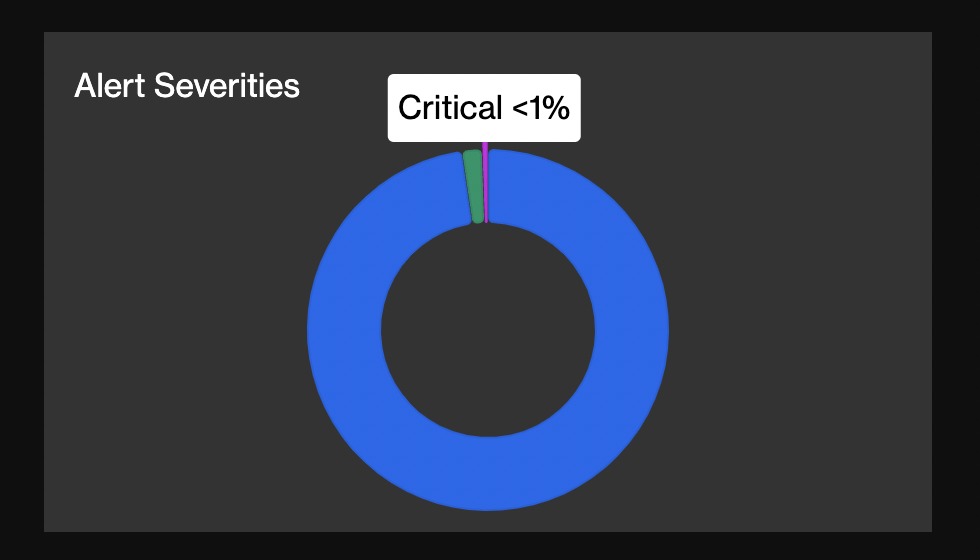
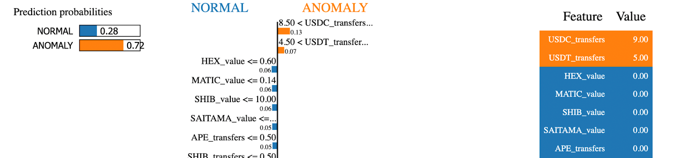

Deploying a Machine Learning Model in a Detection Bot
This guide will share tips and tricks on deploying a scikit-learn machine learning model in a Python detection bot. To help illustrate the outlined steps, the guide will make references to the Anomalous Token Transfer ML Detection Bots code (ATT). Throughout the guide, well use the abbreviation ATT to refer to this bot.
The ATT bot utilizes the Isolation Forest, an unsupervised outlier detection algorithm to detect anomalous transactions with erc20 token transfers. For more details on its training process, please check out the bots readme.
Loading the ML Model
The following three steps are required to load and interact with a trained machine learning model in the detection bot container:
- Save the trained model with serialization.
- Add model to Dockerfile.
- Load the model in the
initializefunction.
Step 1: Save trained model with serialization
To use a model in a different environment without retraining, well need a way to serialize the model. Dill, an extended version of Pickle, a built-in python object serialization module, was used to serialize the ATTs model after training in a python notebook.
For more details on persisting scikit-learn models, please check out the model persistence documentation.
Step 2: Add model to Dockerfile
Next, the serialized model will need to be added to the Dockerfile for the model to be accessible in the container.
Tip: Update base image for faster Docker builds
Most Python detection bots use the alpine base image for installing Python dependencies. However, if the bot utilizes Python data science packages such as numpy, pandas, and scikit-learn, the build can take 2+ hours. To reduce the build time, its recommended to update the Dockerfile to use a debian base image. This will bring the build time down to <10 minutes. To learn more about this, please check out this github issue.
Step 3: Load model in the initialize handler
The initialize handler can be used to set any global variables and will be only invoked once in the beginning after a bot is assigned to a scan node. To avoid loading a model every time for prediction, we can define a global variable MODEL and load it once during initialization.
ML_MODEL = None
def initialize():
global ML_MODEL
logger.info('Start loading model')
with open('isolation_forest.pkl', 'rb') as f:
ML_MODEL = pickle.load(f)
logger.info('Complete loading model')
When loading a model, it is important for the scikit-learn version in the bot environment to be the exact version as the version used during saving. If not, the model can output unexpected results.
Preparing Model Input Data
When preparing input data for a model, you can follow the tips below that can help with code readability, feature generation speed, and debugging:
Tip 1: Break down logic into separate files
Create a separate file for input data processing related functions and keep each function logic readable and simple. The ATT bot has a file called data_processing.py, where feature generation functions are located. This will avoid clutter in the main agent.py file and maintain separation of concern.
Tip 2: Caching 3rd Party API Results
If the model relies on 3rd party data like Etherscan and some data is expected to be requested more than once, consider setting up an LRU cache with pythons functools.lru_cache. This will eliminate redundant network calls and improve feature generation speed. The ATT bot has an LRU cache setup for the following functions:
- Get_first_timestamp: Given address A, the function queries Etherscan to get address As first transaction timestamp.
- Get_token_info: Given an erc20 token address, the function requests token name, symbol, and decimals from the Ethplorer API.
Tip 3: Input Validation and Alerting
There can be issues during feature generation, especially if requested data from 3rd party APIs are not available. Validating the generated inputs can help surface issues more easily. With validation, we can avoid producing model predictions from invalid inputs. To surface errors more clearly, a finding can be produced for invalid inputs.
The ATT Bot has a simple validation function that checks for incorrect calculation of the feature account_active_period_in_minutes.
def valid_features(features) -> bool:
'''Evaluate model input values'''
if features['account_active_period_in_minutes'] < 0:
return False
return True
If the features are invalid, the ATT bot creates an InvalidModelFeatures finding with severity level set to info. These findings can be easily queryable via the Forta API and examined.
class InvalidModelFeatures(TokenTransfersTxFinding):
def __init__(self, metadata, tx_executor):
super().__init__()
self.alert_id = 'INVALID-TOKEN-TRANSFERS-TX'
self.description = f'Model input generation failed for tx executed by {tx_executor}'
self.name = 'Invalid Model Features'
self.severity = FindingSeverity.Low
self.type = FindingType.Info
self.metadata = metadata
Processing Model Output
Tip 1: Normalizing Prediction Values
For anomaly detection, its good practice to normalize a model's prediction to a value range between 0 and 1 where anomalous values are closer to 1. It can help you understand how anomalous a value is and evaluate different ML techniques more easily.
Tip 2: Setting a Classification Threshold
With the normalized value, you can set an ANOMALY_THRESHOLD to tweak how often a prediction is classified as an anomaly and reduce the bots alerting rate. If precision is more important than recall, the threshold can be set to a higher value (e.g. prediction greater than 0.7 is considered anomalous). If recall is more important, the threshold can be set lower to allow more predictions with low confidence scores to be classified as anomalies.
Heres how the ATT models scores are updated and predictions defined based on a threshold.
raw_score = ML_MODEL.score_samples(model_input)[0]
# normalize to return score between 0 and 1 (inclusive)
normalized_score = abs(raw_score)
# ANOMALY_THRESHOLD set to 0.5
prediction = 'ANOMALY' if normalized_score >= ANOMALY_THRESHOLD else 'NORMAL'
Tip 3: Distinguish Model Outputs in Findings
If certain model outputs are more important to surface than others, for example an anomaly vs inlier, its important to set an appropriate severity and finding type for different model outputs.
The ATT has a different finding class for anomalous and normal transactions:
class NormalTransaction(TokenTransfersTxFinding):
def __init__(self, metadata, tx_executor):
super().__init__()
self.alert_id = 'NORMAL-TOKEN-TRANSFERS-TX'
self.description = f'{tx_executor} executed normal tx with token transfers'
self.name = 'Normal Transaction'
self.severity = FindingSeverity.Info
self.type = FindingType.Info
self.metadata = metadata
class AnomalousTransaction(TokenTransfersTxFinding):
def __init__(self, metadata, tx_executor):
super().__init__()
self.alert_id = 'ANOMALOUS-TOKEN-TRANSFERS-TX'
self.description = f'{tx_executor} executed anomalous tx with token transfers'
self.name = 'Anomalous Transaction'
self.severity = FindingSeverity.Critical
self.type = FindingType.Suspicious
self.metadata = metadata
Also, over time you may update and improve the model, so to be able to distinguish and evaluate different models, its important to include the model version, score, classification label, and used threshold in the finding. When the model is updated, the model version can help separate out findings produced by the old and new model.
The agent docker image hash can technically be used as a version, but the hash will not be able to tell apart a code update, model update, or both, so maintaining separate model and bot versions is key. It may also be helpful to keep a log of the model version and the changes you made so that youre aware of the techniques you tried before and avoid re-evaluating past experiments.
ATT bots finding outputs (partial):
{
"name": "Normal Transaction",
...
"metadata": {
...
"prediction": "NORMAL",
"anomaly_score": 0.311,
"anomaly_threshold": 0.5,
"model_version": "1657669403" # created timestamp
}
}
Monitoring Model Performance
Tip 1: Recording Latency
Finally, its also useful to record feature generation time and model response time to gauge the models performance in production. This can help you debug and detect issues more easily.
ATT bots finding outputs (partial):
Tip 2: Retraining ML Model
As time passes, the model performance can degrade due to shifts in real world data distribution. So once the model is deployed, it's important to frequently monitor the model output distribution to detect any deviations from the distribution seen during training. If the deviation is significant, its recommended to retrain the model with more recent data.
For example, with the ATT bot, the model can start considering more transactions as anomalous if the more recent transactions no longer share similar patterns or characteristics as the transactions the model was trained on. If the ATT bot starts to alert more anomalies than usual, it may be a good time to retrain the model with recent transaction data.
Tip 3: Monitoring ML Model Performance
There are two ways to monitor a ML models performance:
- One option is to check your bots
Alert Severitiesbreakdown on the bot details page. If the models class label predictions are mapped to different severity levels, you can use the pie chart to roughly gauge each classs prediction rate. For example, the ATT bot outputs class labelsANOMALYorNORMAL. The anomalous transactions have the severity level set to CRITICAL, and normal transactions have the level set toINFO. The pie chart below shows the CRITICAL findings rate (= anomaly rate) is <1%.

- Another option is to query alerts with the Forta API and calculate more precise model statistics for a specific timeframe. For the ATT bot, this Daily Model Stats Notebook queries 1 days worth of alerts and compares the models anomaly rate in production with trainings anomaly rate. This notebook also shows how ANOMALY_THRESHOLD can be tweaked to increase or decrease the anomaly rate.
Interpreting Model Predictions
It may be challenging to trust a models predictions without understanding the rationale behind it. There are explainable AI packages such as Local Interpretable Model-Agnostic Explanations (LIME) or SHapley Additive exPlanations (SHAP) that can explain model predictions. These explanations can help you see the particular features the model considered to make a prediction.
With the ATT bot, LIME produces a list of features and their weights to indicate the features influence on the prediction. For example, LIME shows below that the ATT model considered the number of USDC/USDT token transfers an important feature in labeling a transaction anomalous.

Was the guide helpful?
If you made it all the way here, thanks for taking the time to read this guide! Was it useful or are there other guides or anything youd like to see? Did you integrate ML in a detection bot or need help? Let the community know how Forta can help, and dont forget to share your bot, thoughts, and/or feedback in the machine-learning discord channel!